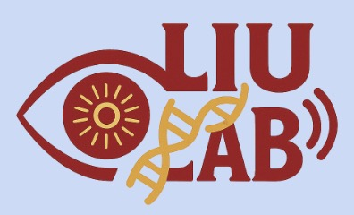
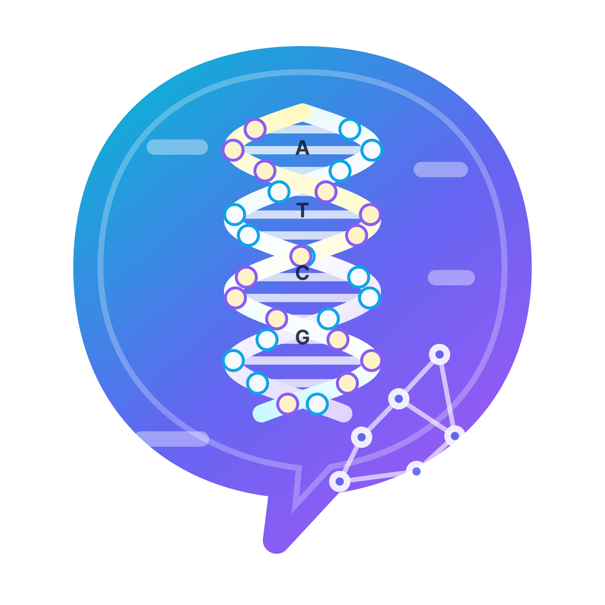

August 2022 – May 2023
Case Western Reserve University
Attended CWRU for my freshman year of college as a biomedical engineering major, building an early foundation in engineering, biology, and quantitative problem-solving.
Computational Biology | Machine Learning | Genomics | Biomedical Engineering
Computational biology portfolio
I am a computational biology student at the University of Southern California working at the intersection of machine learning, genomics, and biomedical research. My projects combine programming, biological reasoning, and quantitative modeling to turn biological patterns into useful scientific predictions.
My recent work includes transformer-based DNA sequence modeling, wet-lab biomedical engineering research, and mathematical modeling of antibiotic resistance during treatment. Together, these experiences reflect my interest in research that connects code, experiments, and biological interpretation.

My academic path began in biomedical engineering and developed into quantitative biology, computational modeling, and machine learning for biological systems.
August 2022 – May 2023
Attended CWRU for my freshman year of college as a biomedical engineering major, building an early foundation in engineering, biology, and quantitative problem-solving.

August 2023 – Present
Transferred to USC at the beginning of my second year and majored in quantitative biology, focusing on computational biology, data analysis, programming, and biological modeling.

October 2025 – Present
Joined a biomedical engineering wet-lab environment studying programmable therapies, retinal disease models, reporter systems, cell therapy concepts, and bioinformatics-guided experimental design.

January 2026 – Present
Worked on a transformer-style sequence modeling project that applies language-model ideas to DNA flexibility, bendability, and sequence-dependent structural prediction.
These projects show three connected sides of my work: deep learning for DNA sequence analysis, biomedical engineering research, and quantitative modeling of biological treatment dynamics.
I used language-model ideas to study DNA sequence context, focusing on how learned representations can connect sequence patterns with structural and mechanical behavior.
Built a transformer-style framework for DNA sequence representation instead of relying only on hand-designed biological features.
Explored tokenization, pretraining logic, contextual embeddings, and downstream prediction tasks for DNA flexibility-related signals.
Focused on flexibility, bendability, nucleosome-positioning preference, and sequence-dependent structural interpretation.
Practiced model architecture planning, loss design, evaluation strategy, and biological interpretation of model outputs.
In Liu Longwei Lab, I learned how biomedical engineering projects connect gene therapy, cell therapy, reporter systems, retinal biology, and computational analysis.
Followed work involving IDLV and lentiviral systems, heat-shock-controlled base editing, ARPE19 reporter cells, and retinal disease models.
Learned the purpose of flow cytometry, FITC apoptosis detection, SEAP and luminescence reporter readouts, and transduction-efficiency testing.
Engaged with retinal organoid/RPE culture, HUVEC and anti-VEGF testing contexts, BiTE concepts, and ultrasound-controlled therapy ideas.
Connected wet-lab questions to single-cell RNA-seq, ATAC-seq, AMD-related analysis, gene regulation, and machine-learning-ready features.
I modeled the race between antibiotic-driven clearance of drug-sensitive pathogens and the rare emergence of resistant mutants that can rescue infection.
Defined sensitive pathogens, resistant pathogens, and antibiotic concentration as interacting state variables in a treatment model.
Built an ODE baseline with logistic growth, competition, mutation from sensitive to resistant cells, drug killing, and antibiotic decay.
Designed Gillespie simulations with birth, death, mutation, and drug-kill events to compare extinction, rescue, and random variability.
Planned rescue-probability heatmaps, time-to-clearance plots, synthetic time-series data, and Bayesian/MCMC parameter inference.
A concise overview of programming, machine learning, and wet-lab skills relevant to research, internships, and computational biology roles.
Researchers, recruiters, and students with related interests are welcome to reach out. Submit the form below to open a confirmation page with your message details.
I am interested in opportunities involving computational biology, machine learning, genomics, bioinformatics, and interdisciplinary biomedical research.
Email: alexz@usc.edu
GitHub: github.com/AlexZ9873
Biomedical Engineering Lab: Liu Longwei Lab